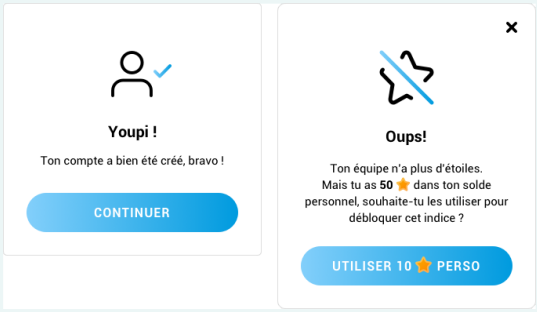
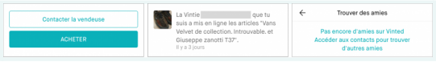
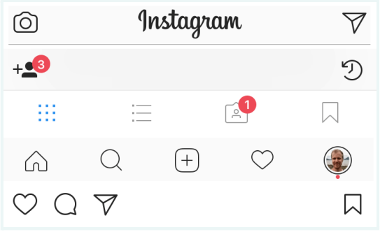

C'EST QUOI, LE WORDING ?
Le wording, souvent appelé « microcopy » en anglais, c’est le contenu présent dans une
interface. Celui qui va parler à l’utilisateur·ice, qui va le ou la guider dans sa navigation et lui
permettre de trouver ce qu’il·elle recherche le plus rapidement et le plus facilement possible.
Différent du contenu rédigé dans un objectif marketing, le wording dont nous allons parler ne
permet pas de mieux référencer son site web, mais de rendre plus ergonomique et efficace
une interface pour une personne.
COMMENT S’ADRESSER À SES UTILISATEURS·RICES
Vouvoiement ou tutoiement
Même si beaucoup d’articles en anglais existent sur le sujet du wording, ceux-ci ne sont pas
confrontés à cette problématique qui existe vraiment chez nous Français : le vouvoiement
ou le tutoiement. Le choix est souvent remis en question dans la vie d’un projet.
Parfois la réponse est toute trouvée, il est évident qu’impots.gouv.fr ne tutoiera pas ses
utilisateurs·trices, ce serait très mal perçu. Mais qu’en est-il d’un jeu ? D’une application un
peu ludique ? Ou même un outil sérieux mais qui proposera parfois de petits conseils
pratiques ?
En fait, la réponse dépend de plusieurs critères :
-
La cible et l’âge des utilisateurs·ices
-
L’image du service par rapport à ces personnes
-
L’orientation voulue (cordial, amical, etc.)
-
La proximité avec l’utilisateur·ice
L’exemple le plus évident qui me vient à l’esprit, c’est l’application Vinted ; un service qui
permet de vendre ses propres vêtements d’occasion pour en acheter de « nouveaux » ou
les échanger avec d’autres Vinties (nom donné aux utilisateurs·ices de Vinted). Vinted tutoie tout le monde, le but étant d’instaurer une notion de communauté, de proximité et de
confiance. Il faut que les utilisateurs·ices puissent converser facilement les un·e·s avec les
autres, et le tutoiement permet de pallier à cette barrière de l’inconnu.
Chez Mobizel, nous avons été confrontés à cette question récemment, dans la conception
d’une application de jeu : Quaestyo, une sorte d’escape game numérique, auquel on peut
jouer en équipe. Il fallait trouver une façon légère de présenter ce jeu pour que
l’utilisateur·ice se sente à l’aise dans l’ambiance des thèmes proposés et dans l’application,
sans dénaturer l’image de Quaestyo qui se veut un peu mystérieuse de par son suspens.
Le tutoiement a été préféré, et ça fonctionne très bien ! De plus, l’utilisation du « tu » dans les messages d’encouragement ou de confirmation aide vraiment à la mise en place du
système de gamification, et donc à la fidélisation du joueur. Le combo parfait !

Et la question du genre?
Depuis peu de temps, Vinted (dont nous parlions tout à l’heure) essaie de faire attention à la
question du genre. Par défaut, l’application considère tous·tes ses utilisateurs·trices comme
des femmes. Tous les adjectifs sont accordés au féminin. Donc un homme qui souhaite
commander des chaussures se verra appelé « elle », « la vintie », « la vendeuse » etc.
Dommage, parce que Vinted demande le sexe de la personne dans ses paramètres !

Vinted c’est pour les filles.
Le design inclusif, des personnes fabuleuses ont parlé de cela avant moi, et très bien même.
Antonin Le Mée, pour ne citer que lui, parle d’inclure les minorités en cessant de demander
le sexe de la personne, qui est souvent une information, bien que très personnelle, inutile au
bon fonctionnement d’un service, mais en lui demandant plutôt à quel pronom la personne
souhaite être adressée
Découvrez les slides de sa conférence UX Rennes ou mieuxEcoutez-le
ET EN PRATIQUE, ON FAIT COMMENT ?
Les consignes et les actions
La façon dont un·e utilisateur·ice va être interpellé·e va changer selon ce qu’il·elle s’apprête
à faire. Lorsque l’application va proposer une action, les consignes et les explications
devront s’adresser à elle·lui à l’impératif.
Exemple :
Choisi une photo sympa pour ton profil !
Selectionner une des options suivantes.
En revanche, les actions doivent venir de l'utilisateurs, donc être à l'infinitif.
Exemple
Ajouter une photo qui déchire
Modifier mes information
Des labels, toujours plus de labels !
On pourrait avoir une règle : 1 icône = 1 label. On n’est jamais trop explicite. Seulement il
n’est pas évident de concilier le joli et le pratique, et en tant que designer, je me retrouve
souvent face à cette problématique. Voici deux contraintes identifiées :
- La contrainte de la place occupée par un pictogramme en plus d’un label qui pourra
potentiellement être très long, et encore plus long si ce mot doit être traduit dans une
autre langue. Donc il faut prévoir une taille de texte suffisamment petite pour le
placer sans compromettre la lisibilité de ce dernier
- La contrainte de l’usage qui n’est pas à négliger : est-ce que l’utilisateur·ice va devoir
utiliser cette action tous les jours ? Auquel cas, aura-t-il·elle bien mémorisé le
pictogramme ? Si tel est le cas, peut-être puis-je me passer d’un label ?
Des interactions peuvent dans certains cas permettre plus facilement de répondre à ces
deux attentes. Par exemple, dans les bottom navigation bar natives d’Android, les icônes
sont affichées seules, au clic sur l’un des items le label se dévoile. Cela permet plusieurs
choses : la compréhension de cet item et la confirmation qu’on a bien cliqué quelque part
grâce à l’animation de l’icône qui se déplace et du texte qui apparaît.
C’est un exemple parmi tant d’autres, mais attention tout de même à ne pas reproduire ce
fonctionnement partout. Il fonctionne ici, mais pas forcément ailleurs.

Instagram n’aime pas les labels. Image issue de l’article « How icons are ruining interfaces »
de Hampus Sethfors
Les formulaires sont des lieux propices au développement du wording, de par les labels de
ceux-ci, leurs placeholders et potentiellement les petits conseils que l’on peut retrouver dans
un champ. Pour un champ dont le label sera « mot de passe », le texte affichera des
caractères spéciaux pour masquer la saisie, un petit message peut préciser des contraintes,
par exemple « minimum 8 caractères », « essayez d’ajouter des chiffres et des majuscules !
»
Le wording pour demander des informations à un utilisateur
On demande de plus en plus à l’utilisateur·ice d’accepter des conditions d’utilisation, des
cases à cocher pour recevoir ou non des e-mails à gogo, des pop-ups d’inscription pour
parler d’une offre incroyablement banale… De plus en plus d’efforts à réaliser et à
comprendre pour un·e pauvre utilisateur·ice sans défense, qui ne souhaite potentiellement
que commander une paire de chaussette ou consulter ses données bancaires… Alors il y a
des façons pour demander. Déjà, on dit s’il vous plaît !
Prenons les cookies par exemple. Axeptio (service dédié à l’accompagnement dans le
consentement sécurisé selon les recommandations RGPD) a rédigé un article très complet
sur la mise en avant d’un style conversationnel plutôt que des bandeaux que les gens ne
lisent plus. (En plus, leurs illustrations sont très jolies ! #emotion). Ils expliquent qu’en leur
posant des questions, et en étant très clair sur l’utilisation de ces petits biscuits, les
utilisateurs·ices prennent le temps d’enregistrer leurs préférences et accordent mieux leur
confiance.